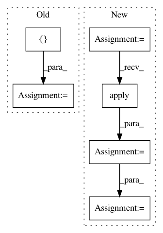

88b164b98c209ea8e2afbfae93a01b9aacd8b0ab,tools/train_shadownet.py,,train_shadownet,#Any#Any#Any#Any#,65
Before Change
images, labels, imagenames = decoder.read_features(ops.join(cfg.PATH.TFRECORDS_DIR, "train_feature.tfrecords"),
num_epochs=None, input_size=cfg.ARCH.INPUT_SIZE,
input_channels=cfg.ARCH.INPUT_CHANNELS)
inputdata, input_labels, input_imagenames = tf.train.shuffle_batch(
tensors=[images, labels, imagenames], batch_size=cfg.TRAIN.BATCH_SIZE,
capacity=1000 + 2*cfg.TRAIN.BATCH_SIZE, min_after_dequeue=100, num_threads=num_threads)
inputdata = tf.cast(x=inputdata, dtype=tf.float32)
// initialise the net model
After Change
dataset = tf.data.TFRecordDataset(cfg.PATH.TFRECORDS_DIR)
dataset = dataset.batch(cfg.TRAIN.BATCH_SIZE, drop_remainder=True)
dataset = dataset.map(decoder.extract_features_batch, num_parallel_calls=num_threads)
// dataset = dataset.apply(tf.contrib.data.map_and_batch(map_func=decoder.extract_features,
// batch_size=config.cfg.TRAIN.BATCH_SIZE,
// num_parallel_batches=num_threads,
// drop_remainder=True))
dataset = dataset.apply(tf.contrib.data.shuffle_and_repeat(cfg.TRAIN.BATCH_SIZE*num_threads*16))
dataset = dataset.prefetch(buffer_size=cfg.TRAIN.BATCH_SIZE*num_threads)
iterator = dataset.make_one_shot_iterator()
input_images, input_labels, input_image_names = iterator.get_next()
// initialise the net model
shadownet = crnn_model.ShadowNet(phase="Train",
hidden_nums=cfg.ARCH.HIDDEN_UNITS,
In pattern: SUPERPATTERN
Frequency: 3
Non-data size: 6
Instances
Project Name: MaybeShewill-CV/CRNN_Tensorflow
Commit Name: 88b164b98c209ea8e2afbfae93a01b9aacd8b0ab
Time: 2018-09-28
Author: debenito@unternehmertum.de
File Name: tools/train_shadownet.py
Class Name:
Method Name: train_shadownet
Project Name: QUANTAXIS/QUANTAXIS
Commit Name: 7c6ca47fade37d1a00f42a37cb14cf9707708f69
Time: 2017-09-01
Author: yutiansut@qq.com
File Name: QUANTAXIS/QASU/save_tdx.py
Class Name:
Method Name: QA_SU_save_index_day
Project Name: QUANTAXIS/QUANTAXIS
Commit Name: 7c6ca47fade37d1a00f42a37cb14cf9707708f69
Time: 2017-09-01
Author: yutiansut@qq.com
File Name: QUANTAXIS/QASU/save_tdx.py
Class Name:
Method Name: QA_SU_save_index_min